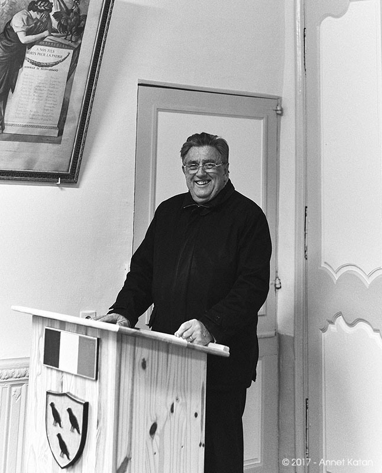

Mairie de Biran
Au village Biran
32350, Gers, France
P: 05.62.64.61.53
F: 05.62.64.61.53
mairiedebiran@orange.fr
Ouverture de la Mairie:
- Le mardi de 9h à 12h
- Le jeudi de 14h à 17h

Maire
M. Patrick Delignières
Secrétaire de Mairie
Maryse Razat
Délégué titulaire à la Communauté de Communes
M. Patrick Delignières
Délégué suppléant à la Communauté de Communes
M. Gérard Cartaud